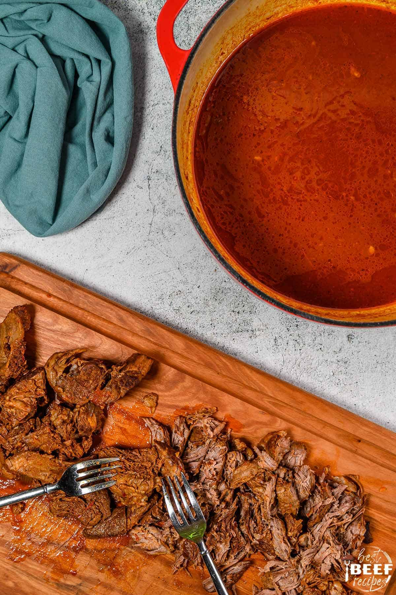
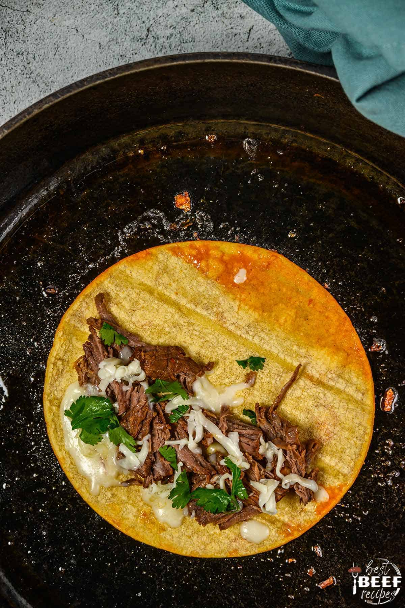
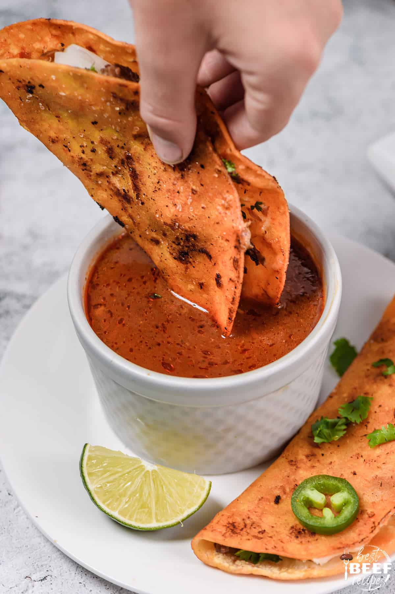

Birria Tacos
This Birria Tacos recipe is juicy, cheesy, delicious—a true showstopper. Rich and flavorful, it begins with braising a big piece of beef and then serving it as a stew (Consomé) topped with onion, cilantro and a squeeze of fresh lime juice. This beef birria is also perfect to make "Quesabirria" tacos, which consists of choping up the meat and frying up the tacos with cheese.

INGREDIENTS NEEDED FOR HOMEMADE BIRRIA TACOS:
- Chuck roast or Short Ribs (Bone-in) cut into large chunks
- Guajillo Peppers
- Oil
- ancho chiles
- tomatoes quartered
- cinnamon stick up to 2-inch
- bay leaf
- dried oregano
- cumin seeds
- dried thyme
- salt
- black peppercorns
INGREDIENTS NEEDED FOR THE TACOS:
- corn tortillas
- diced onion
- chopped cilantro
- melting cheese
- lime cut into wedges
How to Make the Birria:
- Place a large pot or dutch oven over medium-high heat. Add olive oil. When hot, season beef with salt and pepper and add to pot. Sear on all sides. Add half of the onion to the pot and cook for two minutes more. Remove the dutch oven from heat and set aside while you make the sauce.
- Remove the stems and seeds from the dried chile peppers.
- In a medium pot, add the chiles, tomatoes, half onion, garlic cloves, cinnamon stick, and bay leaf. Pour in enough water to cover all ingredients, about 4 to 5 cups. Place on stove over medium-high heat and bring to boil. Once boiling, reduce heat to low and simmer uncovered for 10 minutes. .
- Add remaining seasonings to the saucepot: dried oregano, cumin seeds, dried thyme, and salt and peppercorns. Give it a stir and simmer for 10 minutes more. Remove from heat and allow to cool for a couple of minutes.
- Strain the contents of the saucepot into a large wire-mesh strainer over a large bowl. Remove the bay leaf and cinnamon stick and discard. Place remaining solids into a blender.
- Add 2 cups of the broth from the sauce into the blender, plus 1 cup of beef broth. Whirl until well blended. Taste and add more salt if needed and blend just until mixed in.
- Place the pot with the beef and onion back on the stove at medium heat. Pour the contents of the blender over the beef. If the sauce is not enough liquid to cover the beef, pour in enough beef broth to cover. Bring to a simmer, then cover and lower the heat. Simmer until meat is tender and shreds easily about 2½ to 3 hours.
How to Make the Birria Tacos:
- Turn off the heat, remove beef from the sauce, and shred.
- Heat a large skillet or griddle over medium heat. Using tongs, dip a tortilla into the top of the stew (where the fat floats), then place it in the hot skillet. Top with some shredded beef, cheese, and cilantro.
- Fold tortilla over and fry for about one minute on each side, until crispy. Remove taco to plate or baking sheet and keep warm. Repeat the above steps with the remaining tortillas.
- Serve warm with a small bowl of the birria stew for dipping. This is key! Serve with lime wedges and sliced jalapenos if desired. Top tacos with diced onion, more cilantro, and more cheese if desired.


